César Rodarte
Identidad visual para nutriólogo
Cesar Rodarte es un nutriólogo ubicado en Zacatecas, México, cuya misión es mejorar la vida de sus clientes a través de métodos de nutrición que combinan innovación con la esencia de la naturaleza. Su enfoque es proporcionar soluciones personalizadas que reflejen su eslogan "La vida que te mereces".

Cesar Rodarte ha estado en la profesión por un tiempo considerable, pero para evitar ser visto como un nutriólogo tradicional, fue crucial posicionarlo como un profesional innovador y cercano. Por lo tanto, la identidad de su marca se centra en tonos verdes vibrantes, que simbolizan salud, crecimiento y la conexión con la naturaleza.
Se eligieron tipografías sans serif modernas y atractivas, que aportan un toque humano e interesante a la imagen de la marca, reflejando la modernidad y la personalización de sus servicios. Cesar Rodarte ofrece consultas y planes nutricionales a través de citas personalizadas, por lo que su marca debía transmitir una experiencia integral y no solo un servicio.
La marca de Cesar Rodarte es innovadora, natural y cercana. Toda su identidad visual refleja el bienestar profundo que busca proporcionar a sus clientes, alineándose con la importancia de una nutrición personalizada y saludable. Esta identidad marca una visión de futuro donde la nutrición va más allá de la dieta, integrando la vida saludable en su totalidad.
 
